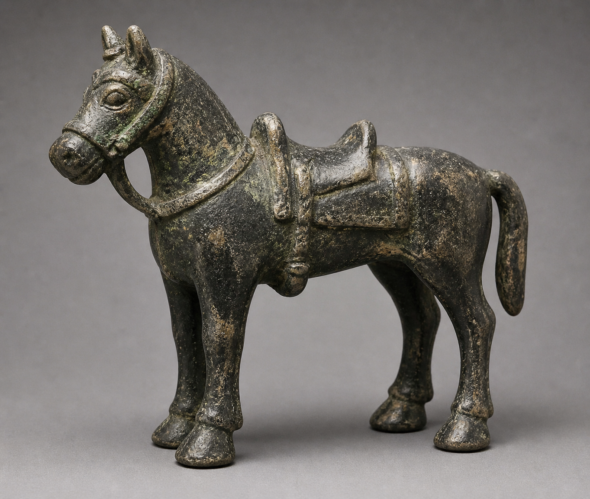
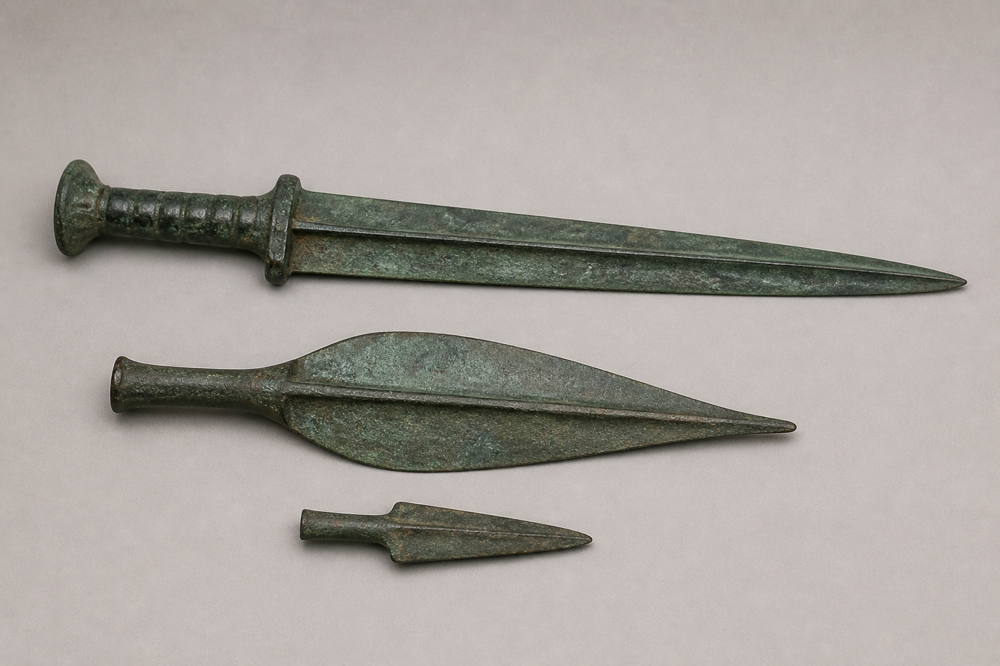
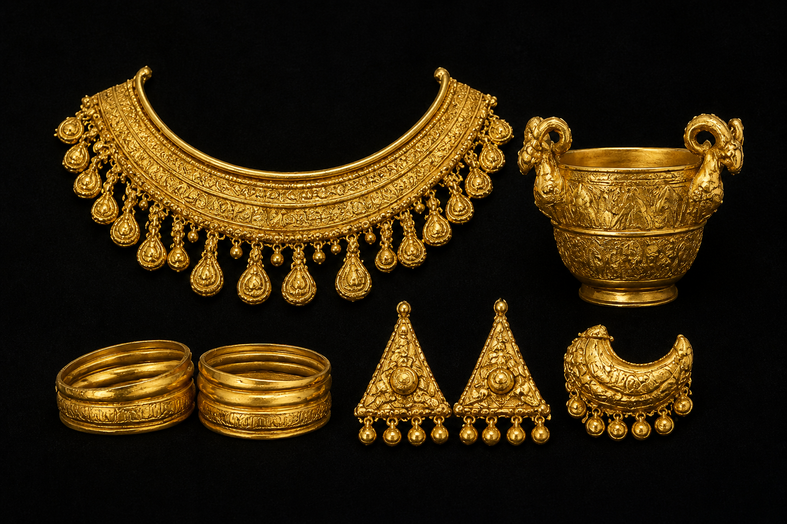
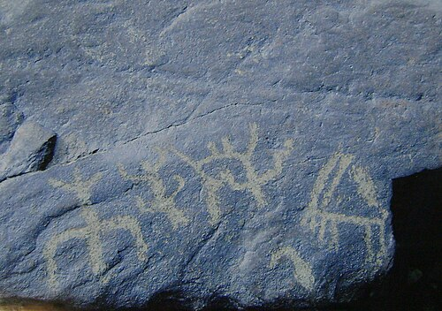
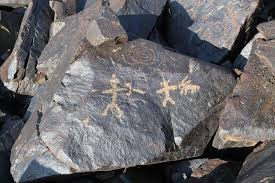
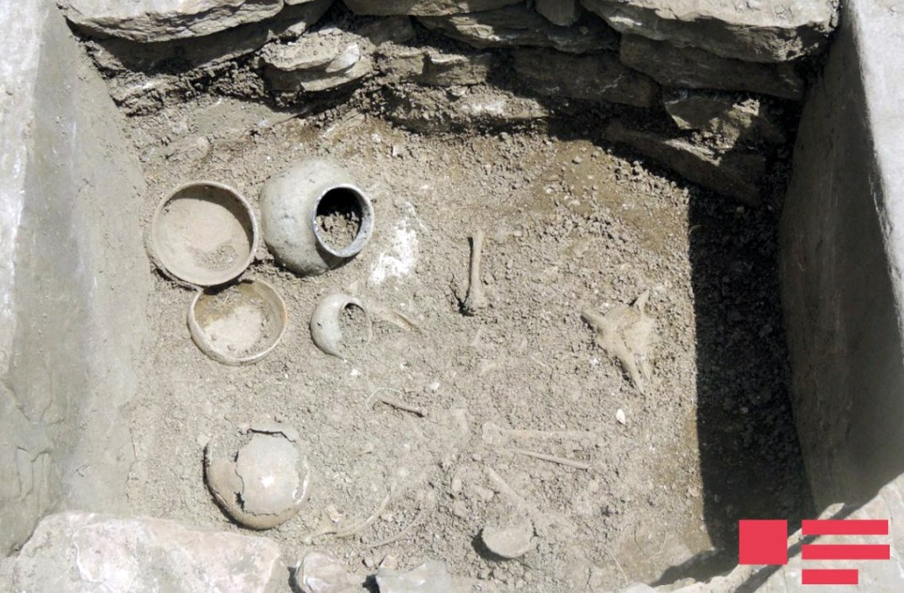
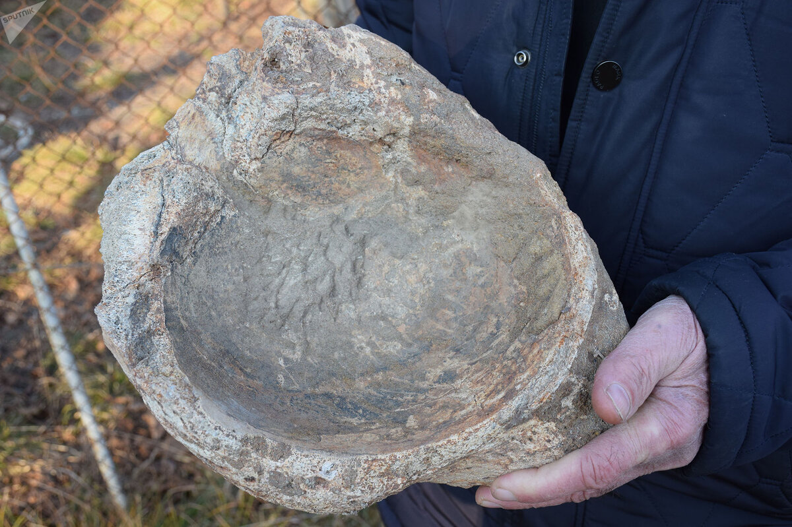
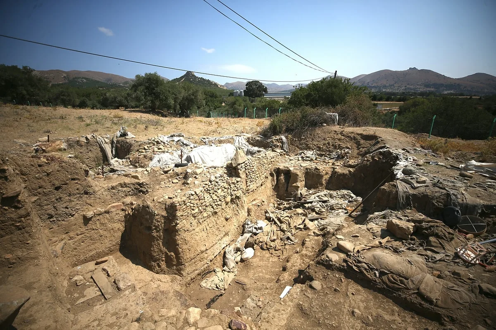
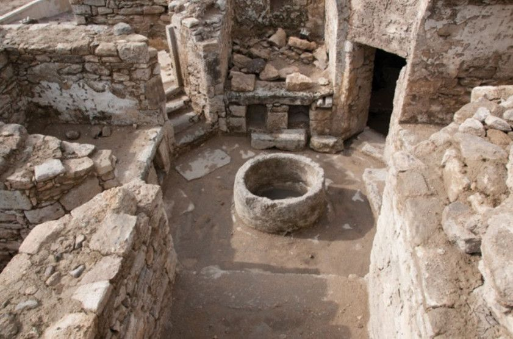

Torpağın dərinliyindən çıxan qızıl bəzəklər, silahlar və qaya rəsmləri — doqquz min illik səyahət.

Qədim dövrə aid tunc at heykəlciyidir. At qədim Azərbaycan mədəniyyətində güc və azadlıq simvolu idi.
At fiqurları çox vaxt hökmdar məzarlarında tapılır — ruhun o dünyaya süvari getməsini simvolizə edir.

Xəncər, nizə ucluğu və ox ucluğundan ibarət bu toplu döyüş və ov üçün istifadə olunurdu.
Bu silahların forması Ön Asiya döyüş ənənəsinin Azərbaycanda unikal inkişafını göstərir.

Bu qızıl bəzək toplusu — boyunbağı, bilərziklər, sırğalar — Manna dövlətinin zərif sənətkarlığının şahididir.
Manna Azərbaycanın ən qədim dövlətlərindəndir. Assuriya mənbələrindən məlumdur.

🪨Gəmiqaya petroqlifləri
Gəmiqaya dağlarında minlərlə qədim qaya rəsmi tapılmışdır — heyvan, insan və astral simvollar təsvir olunur.
Gəmiqaya rəsmləri qədim insanların dünyagörüşünü, təsərrüfat həyatını əks etdirən nadir mənbədir.

🎨Qobustan qaya rəsmləri
Qobustan Milli Parkında minlərlə il əvvəldən qalma qaya rəsmləri — ov səhnələri, rəqs edən insanlar, qayıqlar təsvir olunur.
Qobustan 2007-ci ildə YUNESKO-nun Ümumdünya İrs siyahısına daxil edilib.

⚱️Xınıslı nekropolü eksponatları
Xınıslı nekropolündə aparılan qazıntılarda qızıl bəzəklər, silahlar, at avadanlıqları və keramika tapılmışdır.
Xınıslı nekropolü Albaniya öncəsi dövr üçün ən zəngin arxeoloji mənbələrdən biridir.

🏺Mingəçevir tapıntıları
Mingəçevir nekropolündə aparılan qazıntılar Qafqaz Albaniyasının ən zəngin arxeoloji materiallarını üzə çıxarmışdır.
Mingəçevir tapıntıları Qafqaz Albaniyasının mədəni müxtəlifliyini sübut edir.

⚔️Skif dövrü tapıntıları
Mil düzündə tapılan Skif kurqanlarından əldə edilmiş qızıl bəzəklər Skif tayfalarının Azərbaycan ərazisindəki mövcudluğunu sübut edir.
Skiflər e.ə. VII əsrdə Cənubi Qafqaza gəlmiş köçəri xalq idi.

🏛️Qala Arxeoloji Kompleksi
Abşeron yarımadasında yerləşən Qala kəndinin arxeoloji qazıntıları zamanı 2000-dən çox artefakt tapılmışdır.
Qala kompleksi Abşeronun arxeoloji, etnoqrafik və memarlıq irsini bir arada qoruyub saxlayan nadir muzey-qoruqlardandır.